1970 – 2009
Iconic Moments
A timeline of Indian screens, songs and gadgets, in order.
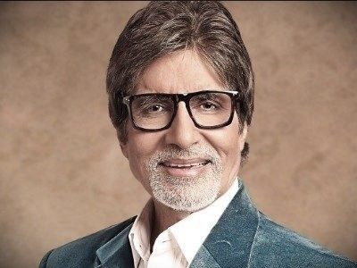
1973
CinemaZanjeer makes a star
Amitabh Bachchan’s intense police-inspector role set the ‘angry young man’ image.
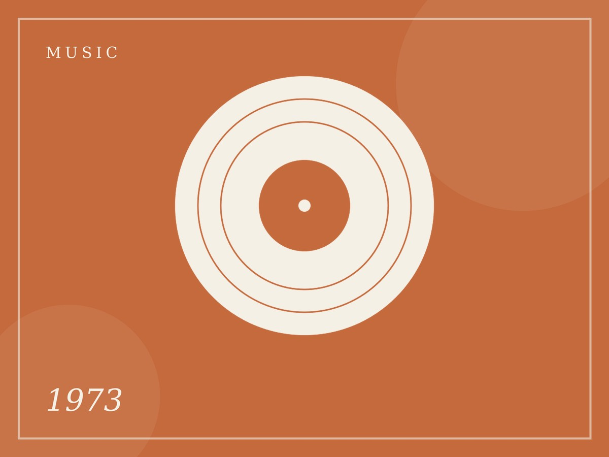
1973
MusicYaadon Ki Baaraat
R.D. Burman’s lively score showed a new Hindi film sound.

1975
CinemaSholay hits cinemas
The action-adventure became one of Hindi cinema’s best-remembered films.
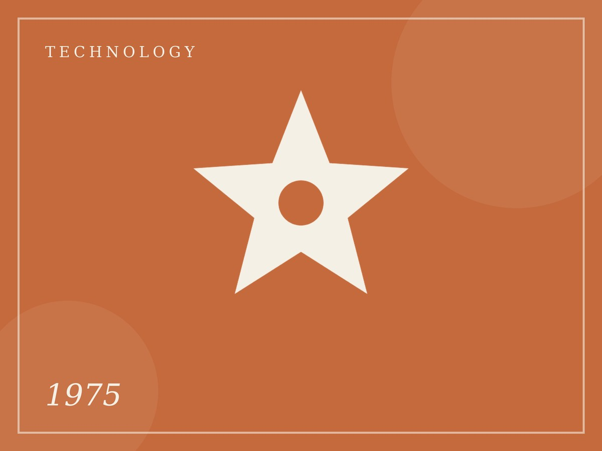
1975
TechnologyAryabhata is launched
India’s first satellite reached orbit in April.

1982
TechnologyColour TV arrives
Colour broadcasts came in time for the Delhi Asian Games.
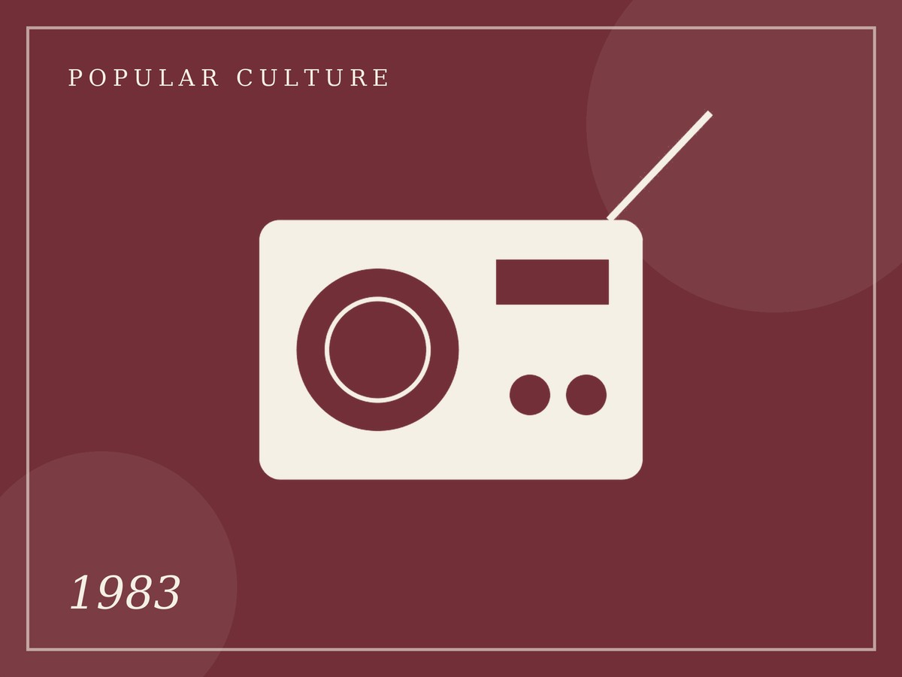
1983
Popular CultureCricket World Cup win
India’s victory turned cricket into a national celebration.
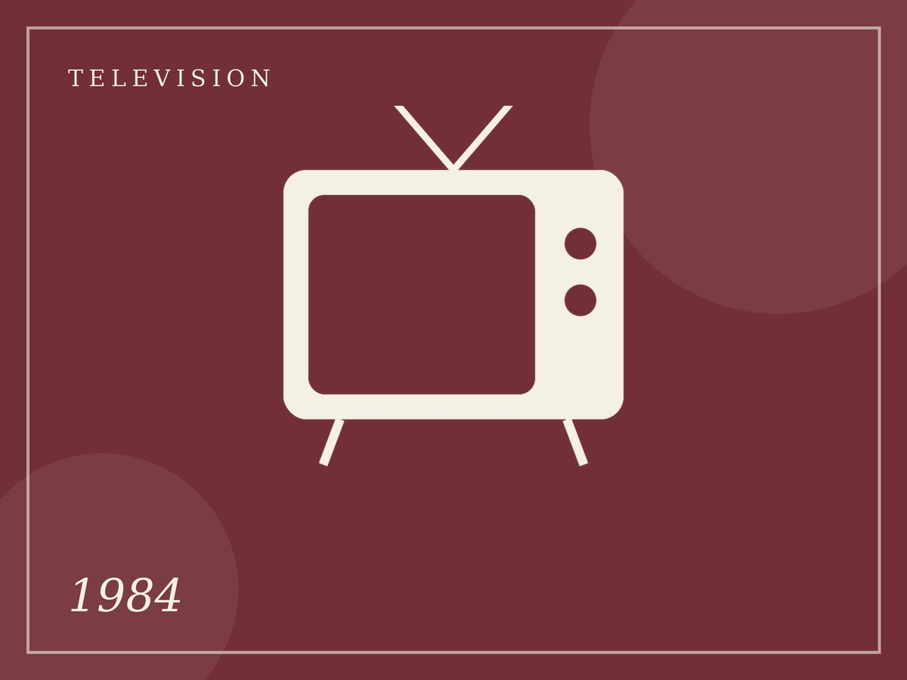
1984
TelevisionHum Log begins
An early Indian soap opera reached Doordarshan viewers.
1987
TelevisionRamayan on Doordarshan
The serial began in January and became a Sunday-morning ritual.
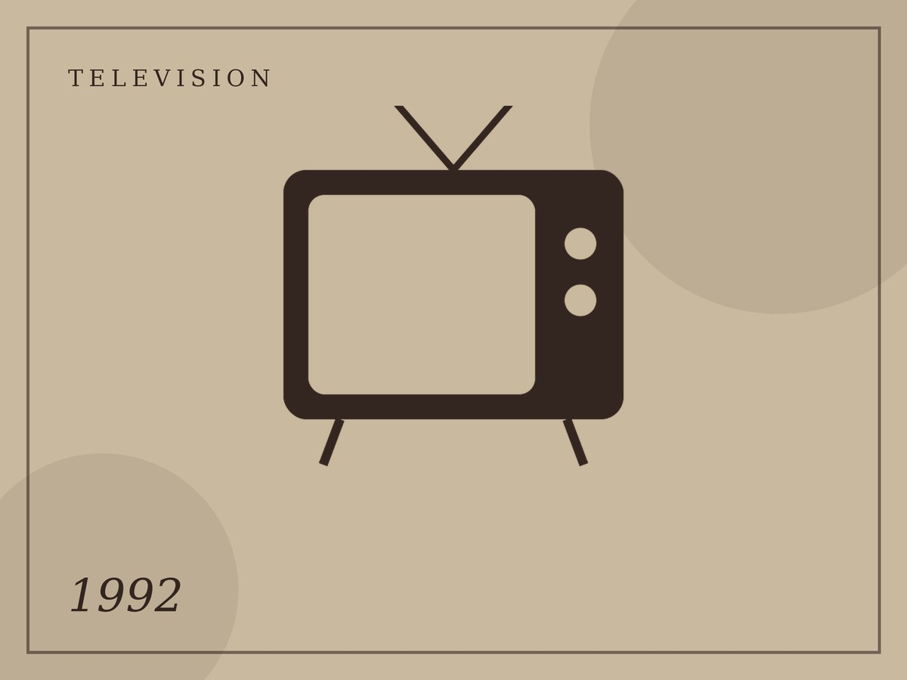
1992
TelevisionZee TV starts
One of India’s first private Hindi satellite channels began broadcasting.
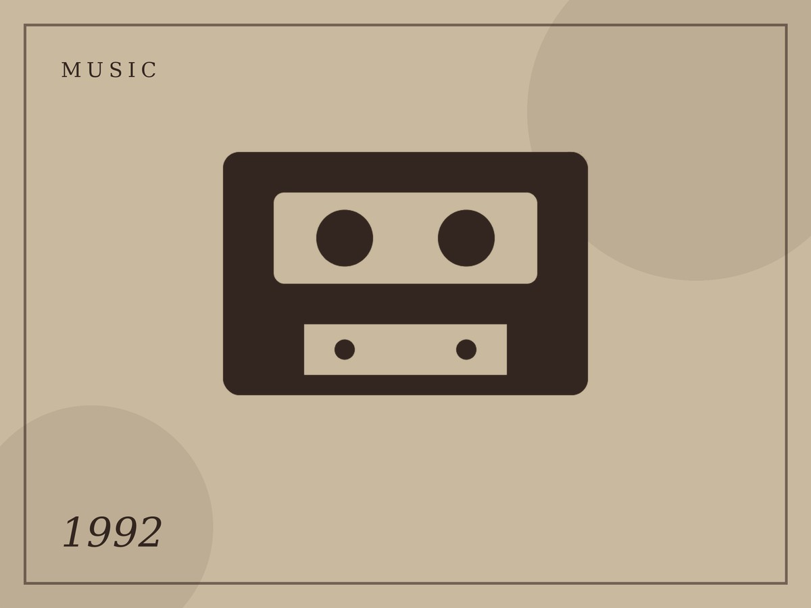
1992
MusicRoja is released
A.R. Rahman’s debut film score brought a fresh sound.
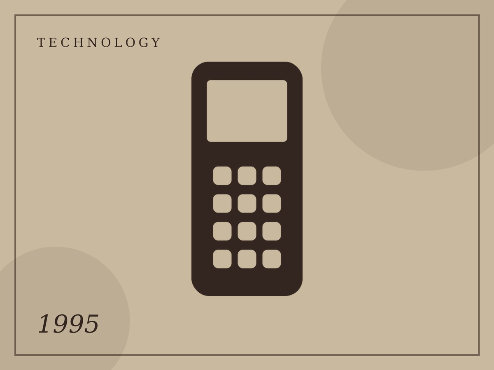
1995
TechnologyFirst mobile phone call
The first call was made in Kolkata on 31 July.
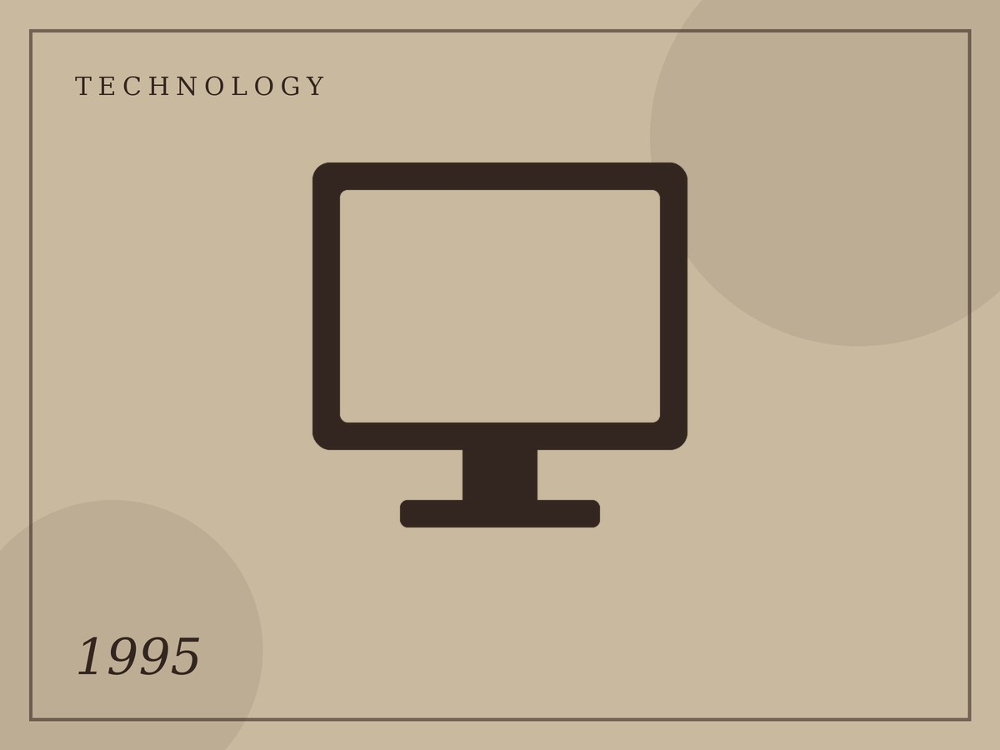
1995
TechnologyPublic internet via VSNL
Internet access opened to the public in August.

1995
CinemaDDLJ is released
A romance that stayed in Mumbai cinemas for over two decades.
1997
TelevisionShaktimaan arrives
A home-grown superhero captured children’s imagination.
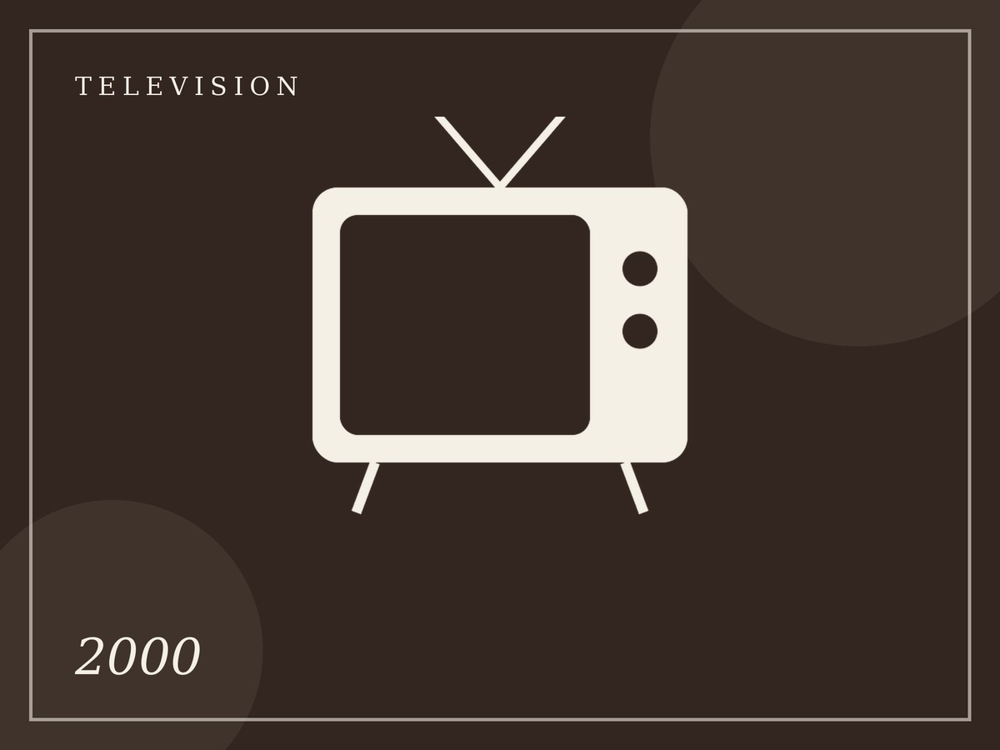
2000
TelevisionKaun Banega Crorepati
The quiz show turned general knowledge into prime-time drama.
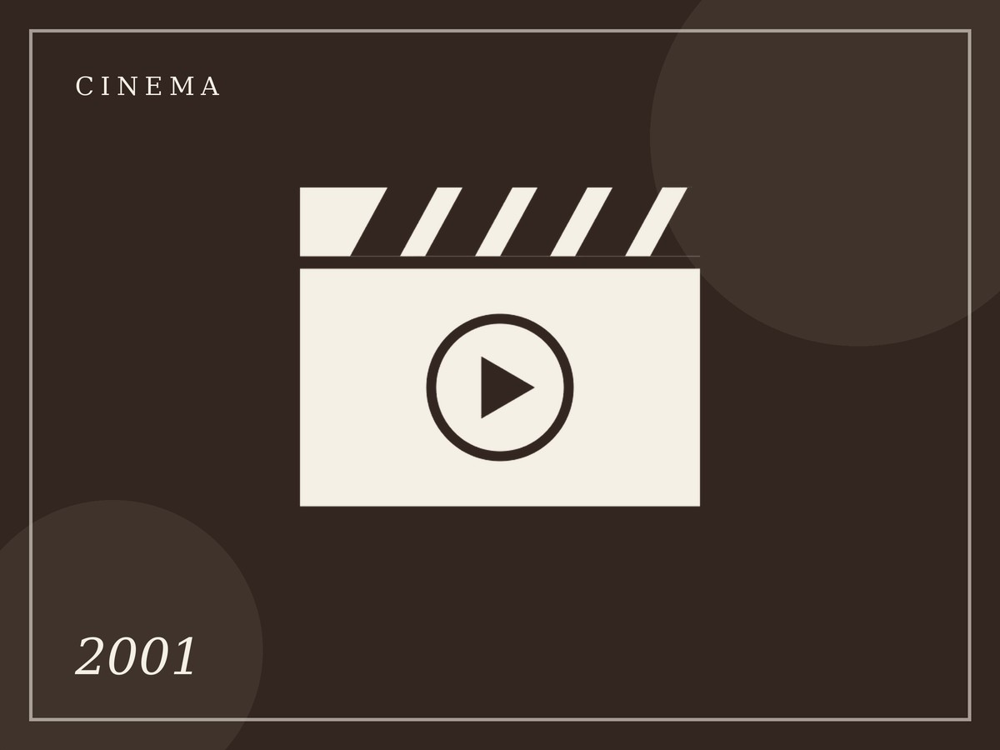
2001
CinemaLagaan
The cricket-in-a-village epic earned an Oscar nomination.
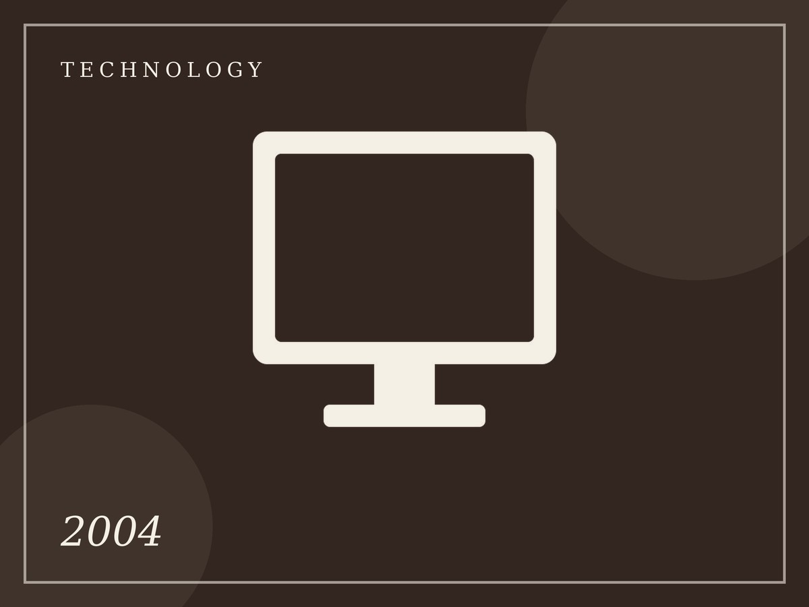
2004
TechnologyOrkut reaches India
Social networking took off, with scraps and testimonials.

2006
CinemaRang De Basanti
A film about friends and ideals that sparked youth conversations.
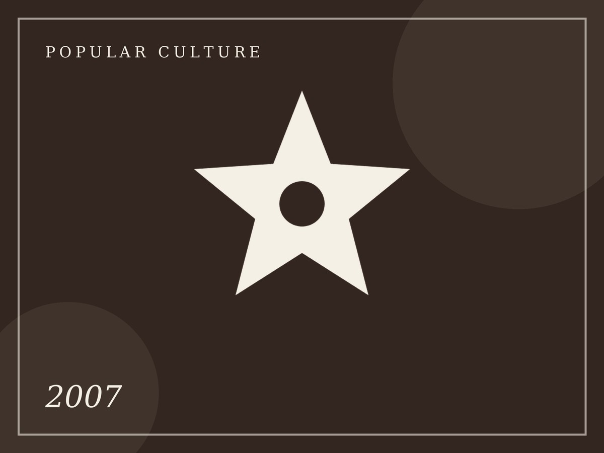
2007
Popular CultureT20 World Cup victory
India won the first edition of the T20 World Cup.